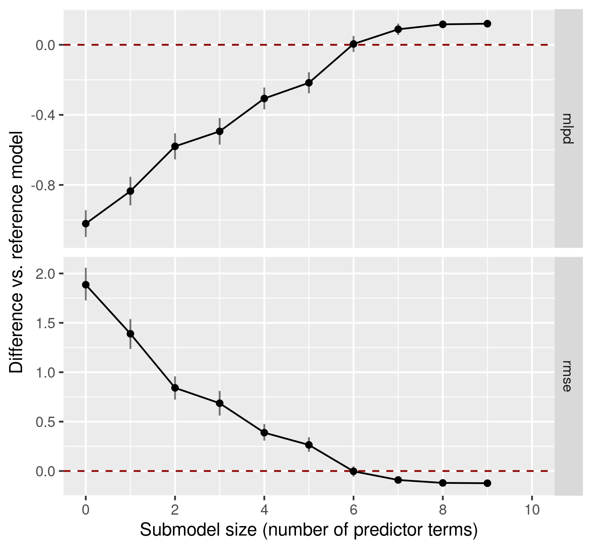
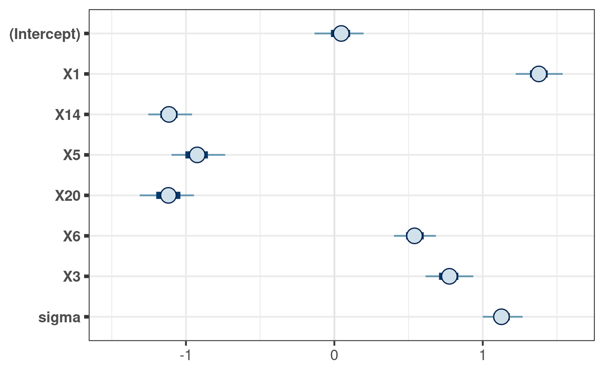
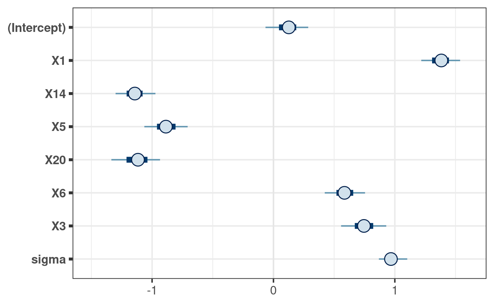
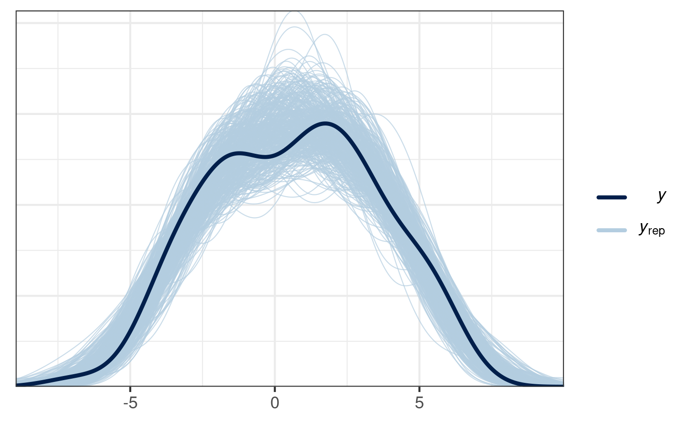

vignettes/projpred.Rmd
projpred.RmdThis vignette shows the main functionalities of the projpred package, which implements the projective variable selection for generalized linear and additive models as well as for generalized linear and additive multilevel models.1 What is special about the projective variable selection is that it not only performs a variable selection, but also allows for valid post-selection inference.
The projective variable selection is based on the ideas of Goutis and
Robert (1998) and Dupuis and Robert (2003). The methods implemented in
projpred are described in detail in Piironen et
al. (2020) and Catalina et al. (2020). They are evaluated in comparison
to many other methods in Piironen and Vehtari (2017a). Type
citation("projpred") for details on how to cite
projpred.
For this vignette, we use projpred’s
df_gaussian data. It contains 100 observations of 20
continuous predictor variables X1, …, X20
(originally stored in a sub-matrix; we turn them into separate columns
below) and one continuous response variable y.
data("df_gaussian", package = "projpred")
dat_gauss <- data.frame(y = df_gaussian$y, df_gaussian$x)First, we have to construct a reference model for the projective variable selection. This model is considered as the best (“reference”) solution to the prediction task. The aim of the projective variable selection is to find a subset of a set of candidate predictors which is as small as possible but achieves a predictive performance as close as possible to that of the reference model.
The projpred package is compatible with reference
models fitted by the rstanarm and brms
packages. To our knowledge, rstanarm and
brms are currently the only packages for which a
get_refmodel() method (which establishes the compatibility
with projpred) exists. Custom reference models can be
constructed via init_refmodel(), as shown in section
“Examples” in the ?init_refmodel help.2 For both,
rstanarm and brms reference models,
all candidate models are submodels of the reference model. In
principle, this is not a necessary assumption for a projective variable
selection (see, e.g., Piironen et al., 2020) and custom reference models
allow to avoid this assumption, but for rstanarm and
brms reference models, this is a reasonable assumption
which simplifies implementation in projpred a lot.
Here, we use the rstanarm package to fit the
reference model. If you want to use the brms package,
simply replace the rstanarm fit (of class
stanreg) in all the code below by your
brms fit (of class brmsfit). Only note
that in case of a brms fit, we recommend to specify
argument brms_seed of
brms:::get_refmodel.brmsfit().
For our rstanarm reference model, we use the
Gaussian distribution as the family for our response. With
respect to the predictors, we only include the linear main effects of
all 20 predictor variables. Compared to the more complex types of
reference models supported by projpred (see section “Supported types of reference models” below),
this is a quite simple reference model which is sufficient, however, to
demonstrate the interplay of projpred’s functions.
We use rstanarm’s default priors in our reference model, except for the regression coefficients for which we use a regularized horseshoe prior (Piironen and Vehtari, 2017c) with the hyperprior for its global shrinkage parameter following Piironen and Vehtari (2017b,c). In R code, these are the preparation steps for the regularized horseshoe prior:
[1] 20
# Prior guess for the number of relevant (i.e., non-zero) regression
# coefficients:
p0 <- 5
# Number of observations:
N <- nrow(dat_gauss)
# Hyperprior scale for tau, the global shrinkage parameter (note that for the
# Gaussian family, 'rstanarm' will automatically scale this by the residual
# standard deviation):
tau0 <- p0 / (D - p0) * 1 / sqrt(N)We now fit the reference model to the data. To make this vignette
build faster, we use only 2 MCMC chains and 500 iterations per chain
(with half of them being discarded as warmup draws). In practice, 4
chains and 2000 iterations per chain are reasonable defaults.
Furthermore, we make use of rstan’s parallelization,
which means to run each chain on a separate CPU core.3 If you run the
following code yourself, you can either rely on an automatic mechanism
to detect the number of CPU cores (like the
parallel::detectCores() function shown below) or adapt
ncores manually to your system.
# Set this manually if desired:
ncores <- parallel::detectCores(logical = FALSE)
### Only for technical reasons in this vignette (you can omit this when running
### the code yourself):
ncores <- min(ncores, 2L)
###
options(mc.cores = ncores)
refm_fit <- stan_glm(
y ~ X1 + X2 + X3 + X4 + X5 + X6 + X7 + X8 + X9 + X10 + X11 + X12 + X13 + X14 +
X15 + X16 + X17 + X18 + X19 + X20,
family = gaussian(),
data = dat_gauss,
prior = hs(global_scale = tau0),
### Only for the sake of speed (not recommended in general):
chains = 2, iter = 500,
###
seed = 2052109, QR = TRUE, refresh = 0
)Usually, we would now have to check the convergence diagnostics (see,
e.g., ?posterior::diagnostics and
?posterior::default_convergence_measures). However, due to
the technical reasons for which we reduced chains and
iter, we skip this step here.
Now, projpred comes into play.
In projpred, the projective variable selection consists of a search part and an evaluation part. The search part determines the solution path, i.e., the best submodel for each submodel size (number of predictor terms). The evaluation part determines the predictive performance of the submodels along the solution path.
There are two functions for performing the variable selection:
varsel() and cv_varsel(). In contrast to
varsel(), cv_varsel() performs a
cross-validation (CV) by running the search part with the training data
of each CV fold separately (an exception is
validate_search = FALSE, see ?cv_varsel and
below) and running the evaluation part on the corresponding test set of
each CV fold. Because of this CV, cv_varsel() is
recommended over varsel(). Thus, we use
cv_varsel() here. Nonetheless, running
varsel() first can offer a rough idea of the performance of
the projections (i.e., of the submodels after projecting the reference
model onto them). A more principled projpred workflow
is work under progress.
Here, we use only some of the available arguments; see the
documentation of cv_varsel() for the full list of
arguments. By default, cv_varsel() runs a leave-one-out
(LOO) CV (see argument cv_method) which also
cross-validates the search (see argument validate_search).
Here, we set argument validate_search to FALSE
to obtain rough preliminary results and make this vignette build faster.
If possible (in terms of computation time), we recommend using the
default of validate_search = TRUE to avoid overfitting in
the selection of the submodel size. Here, we also set
nclusters_pred to a low value of 20 only to
speed up the building of the vignette. By modifying argument
nterms_max, we impose a limit on the submodel size until
which the search is continued. Typically, one has to run the variable
selection with a large nterms_max first (the default value
may not even be large enough) and only after inspecting the results from
this first run, one is able to set a reasonable nterms_max
in subsequent runs. The value we are using here (9) is
based on such a first run (which is not shown here, though).
cvvs <- cv_varsel(
refm_fit,
### Only for the sake of speed (not recommended in general):
validate_search = FALSE,
nclusters_pred = 20,
###
nterms_max = 9,
seed = 411183
)The first step after running the variable selection should be the
decision for a final submodel size. This should be the first step (in
particular, before inspecting the solution path) in order to avoid a
user-induced selection bias (which could occur if the user made the
submodel size decision dependent on the solution path). To decide for a
submodel size, there are several performance statistics we can plot as a
function of the submodel size. Here, we use the expected log (pointwise)
predictive density (for a new dataset) (ELPD; empirically, this is the
sum of the log predictive densities of the observations in the
evaluation—or “test”—set) and the root mean squared error (RMSE). By
default, the performance statistics are plotted on their original scale,
but with deltas = TRUE, they are calculated as differences
from a baseline model (which is the reference model by default, at least
in the most common cases). Since the differences are usually of more
interest (with regard to the submodel size decision), we directly plot
with deltas = TRUE here (note that as
validate_search = FALSE, this result is slightly
optimistic, and the plot looks different when
validate_search = TRUE is used):

Based on that plot, we would decide for a submodel size of 6 because
that’s the point where the performance measures level off and are close
enough to the reference model’s performance (this is also affected by
validate_search = FALSE).
modsize_decided <- 6Note that projpred offers the
suggest_size() function which may help in the decision for
a submodel size, but this is a rather heuristic method and needs to be
interpreted with caution (see ?suggest_size).
suggest_size(cvvs)[1] 6Here, we would get the same final submodel size (6) as
by our manual decision (suggest_size() is also affected by
validate_search = FALSE).
Only now, after we have made a decision for the submodel size, we
inspect further results from the variable selection and, in particular,
the solution path. For example, we can simply print() the
resulting object:
cvvs
Family: gaussian
Link function: identity
Formula: y ~ X1 + X2 + X3 + X4 + X5 + X6 + X7 + X8 + X9 + X10 + X11 +
X12 + X13 + X14 + X15 + X16 + X17 + X18 + X19 + X20
Observations: 100
CV method: LOO search not included
Search method: l1, maximum number of terms 9
Number of clusters used for selection: 1
Number of clusters used for prediction: 20
Suggested Projection Size: 6
Selection Summary:
size solution_terms elpd.loo se diff diff.se
0 <NA> -249.2 5.6 -100.8 7.8
1 X1 -230.6 6.1 -82.2 8.3
2 X14 -205.1 6.2 -56.7 7.5
3 X5 -196.5 7.3 -48.2 7.6
4 X20 -177.8 5.9 -29.4 6.4
5 X6 -168.8 5.0 -20.4 6.2
6 X3 -146.4 5.2 1.9 4.6
7 X8 -138.2 4.5 10.2 3.5
8 X11 -135.2 4.4 13.1 2.5
9 X10 -134.8 4.4 13.6 2.4
### Alternative modifying the number of printed decimal places:
# print(cvvs, digits = 2)
### The solution path can be seen in the print() output
(column solution_terms), but it is also accessible through
the solution_terms() function:
( soltrms <- solution_terms(cvvs) )[1] "X1" "X14" "X5" "X20" "X6" "X3" "X8" "X11" "X10"Combining the decided submodel size of 6 with the solution path leads to the following terms (as well as the intercept) as the predictor terms of the final submodel:
( soltrms_final <- head(soltrms, modsize_decided) )[1] "X1" "X14" "X5" "X20" "X6" "X3" The project() function returns an object of class
projection which forms the basis for convenient
post-selection inference. By the following code, project()
will project the reference model onto the final submodel once again4:
prj <- project(
refm_fit,
solution_terms = soltrms_final,
seed = 15705533
)For more accurate results, we could have increased argument
ndraws of project() (up to the number of
posterior draws in the reference model). This increases the runtime,
which we don’t want in this vignette.
Next, we create a matrix containing the projected posterior draws
stored in the depths of project()’s output:
prj_mat <- as.matrix(prj)This matrix is all we need for post-selection inference. It can be used like any matrix of draws from MCMC procedures, except that it doesn’t reflect a typical posterior distribution, but rather a projected posterior distribution, i.e., the distribution arising from the deterministic projection of the reference model’s posterior distribution onto the parameter space of the final submodel.
The posterior package provides a general way to deal with posterior distributions, so it can also be applied to our projected posterior. For example, to calculate summary statistics for the marginals of the projected posterior:
library(posterior)
prj_drws <- as_draws_matrix(prj_mat)
# In the following call, as.data.frame() is used only because pkgdown
# versions > 1.6.1 don't print the tibble correctly.
as.data.frame(summarize_draws(
prj_drws,
"median", "mad", function(x) quantile(x, probs = c(0.025, 0.975))
)) variable median mad 2.5% 97.5%
1 (Intercept) 0.04648206 0.09668587 -0.1488236 0.2385997
2 X1 1.37787022 0.08877716 1.1748630 1.5602974
3 X14 -1.11470328 0.08589042 -1.2963313 -0.9215542
4 X5 -0.92397042 0.11238732 -1.1436158 -0.7046140
5 X20 -1.11797985 0.12002328 -1.3301804 -0.9110209
6 X6 0.54013371 0.09038704 0.3710599 0.7248236
7 X3 0.77514379 0.09488453 0.5881578 0.9547983
8 sigma 1.12599091 0.08129363 0.9889443 1.2994112A visualization of the projected posterior can be achieved with the
bayesplot package, for example using its
mcmc_intervals() function.
library(bayesplot)
bayesplot_theme_set(ggplot2::theme_bw())
mcmc_intervals(prj_mat) +
ggplot2::coord_cartesian(xlim = c(-1.5, 1.6))
Note that we only visualize the 1-dimensional marginals of the projected posterior here. To gain a more complete picture, we would have to visualize at least some 2-dimensional marginals of the projected posterior (i.e., marginals for pairs of parameters).
For comparison, consider the marginal posteriors of the corresponding parameters in the reference model:
refm_mat <- as.matrix(refm_fit)
mcmc_intervals(refm_mat, pars = colnames(prj_mat)) +
ggplot2::coord_cartesian(xlim = c(-1.5, 1.6))
Here, the reference model’s marginal posteriors differ only slightly from the marginals of the projected posterior. This does not necessarily have to be the case.
Predictions from the final submodel can be made by
proj_linpred() and proj_predict().
We start with proj_linpred(). For example, suppose we
have the following new observations:
( dat_gauss_new <- setNames(
as.data.frame(replicate(length(soltrms_final), c(-1, 0, 1))),
soltrms_final
) ) X1 X14 X5 X20 X6 X3
1 -1 -1 -1 -1 -1 -1
2 0 0 0 0 0 0
3 1 1 1 1 1 1Then proj_linpred() can calculate the linear
predictors5 for all new observations from
dat_gauss_new. Depending on argument
integrated, these linear predictors can be averaged across
the projected draws (within each new observation). For instance, the
following computes the expected values of the new observations’
predictive distributions:6
prj_linpred <- proj_linpred(prj, newdata = dat_gauss_new, integrated = TRUE)
cbind(dat_gauss_new, linpred = as.vector(prj_linpred$pred)) X1 X14 X5 X20 X6 X3 linpred
1 -1 -1 -1 -1 -1 -1 0.50689656
2 0 0 0 0 0 0 0.04246826
3 1 1 1 1 1 1 -0.42196003If dat_gauss_new also contained response values (i.e.,
y values in this example), then proj_linpred()
would also evaluate the log predictive density at these.
With proj_predict(), we can obtain draws from predictive
distributions based on the final submodel. In contrast to
proj_linpred(<...>, integrated = FALSE), this
encompasses not only the uncertainty arising from parameter estimation,
but also the uncertainty arising from the observational (or “sampling”)
model for the response.7 This is useful for what is usually termed a
posterior predictive check (PPC), but would have to be termed something
like a posterior-projection predictive check (PPPC) here.
prj_predict <- proj_predict(prj, .seed = 762805)
# Using the 'bayesplot' package:
ppc_dens_overlay(y = dat_gauss$y, yrep = prj_predict, alpha = 0.9, bw = "SJ")
This PPPC shows that our final projection is able to generate predictions similar to the observed response values, which indicates that this model is reasonable, at least in this regard.
Apart from the gaussian() response family used in this
vignette, projpred also supports the
binomial()8 and the poisson() family. On
the side of the predictors, projpred not only supports
linear main effects as shown in this vignette, but also interactions,
multilevel9, and—as an experimental feature—additive10
terms.
Transferring this vignette to such more complex reference models is straightforward: Basically, only the code for fitting the reference model via rstanarm or brms needs to be adapted. The projpred code stays almost the same. Only note that in case of multilevel or additive reference models, some projpred functions then have slightly different options for a few arguments. See the documentation for details.
For example, to apply projpred to the
VerbAgg dataset from the lme4 package, a
corresponding multilevel reference model for the binary response
r2 could be created by the following code:
data("VerbAgg", package = "lme4")
refm_fit <- stan_glmer(
r2 ~ btype + situ + mode + (btype + situ + mode | id),
family = binomial(),
data = VerbAgg,
seed = 82616169, QR = TRUE, refresh = 0
)As an example for an additive (non-multilevel) reference model,
consider the lasrosas.corn dataset from the
agridat package. A corresponding reference model for
the continuous response yield could be created by the
following code (note that pp_check(refm_fit) gives a bad
PPC in this case, so there’s still room for improvement):
data("lasrosas.corn", package = "agridat")
# Convert `year` to a `factor` (this could also be solved by using
# `factor(year)` in the formula, but we avoid that here to put more emphasis on
# the demonstration of the smooth term):
lasrosas.corn$year <- as.factor(lasrosas.corn$year)
refm_fit <- stan_gamm4(
yield ~ year + topo + t2(nitro, bv),
family = gaussian(),
data = lasrosas.corn,
seed = 4919670, QR = TRUE, refresh = 0
)As an example for an additive multilevel reference model, consider
the gumpertz.pepper dataset from the
agridat package. A corresponding reference model for
the binary response disease could be created by the
following code:
data("gumpertz.pepper", package = "agridat")
refm_fit <- stan_gamm4(
disease ~ field + leaf + s(water),
random = ~ (1 | row) + (1 | quadrat),
family = binomial(),
data = gumpertz.pepper,
seed = 14209013, QR = TRUE, refresh = 0
)Sometimes, the ordering of the predictor terms in the solution path makes sense, but for increasing submodel size, the performance measures of the projections do not approach that of the reference model. There are different reasons that can explain this behavior (the following list might not be exhaustive, though):
ndraws_pred could be too small. Usually, this comes in
combination with a difference in predictive performance which is
comparatively small. Increasing ndraws_pred should help,
but it also increases the computational cost. Re-fitting the reference
model and thereby ensuring a narrower posterior (usually by employing a
stronger sparsifying prior) should have a similar effect.varsel(), then the lack of the CV in
varsel() may lead to overconfident and overfitted results.
In this case, try running cv_varsel() instead of
varsel() (which you should in any case for your final
results).Catalina, A., Bürkner, P.-C., and Vehtari, A. (2020). Projection predictive inference for generalized linear and additive multilevel models. arXiv:2010.06994. URL: https://arxiv.org/abs/2010.06994.
Catalina, A., Bürkner, P., and Vehtari, A. (2021). Latent space projection predictive inference. arXiv:2109.04702. URL: https://arxiv.org/abs/2109.04702.
Dupuis, J. A. and Robert, C. P. (2003). Variable selection in qualitative models via an entropic explanatory power. Journal of Statistical Planning and Inference, 111(1-2):77–94. DOI: 10.1016/S0378-3758(02)00286-0.
Goutis, C. and Robert, C. P. (1998). Model choice in generalised linear models: A Bayesian approach via Kullback–Leibler projections. Biometrika, 85(1):29–37.
Piironen, J., Paasiniemi, M., and Vehtari, A. (2020). Projective inference in high-dimensional problems: Prediction and feature selection. Electronic Journal of Statistics, 14(1):2155-2197. DOI: 10.1214/20-EJS1711.
Piironen, J. and Vehtari, A. (2017a). Comparison of Bayesian predictive methods for model selection. Statistics and Computing, 27(3):711-735. DOI: 10.1007/s11222-016-9649-y.
Piironen, J. and Vehtari, A. (2017b). On the hyperprior choice for the global shrinkage parameter in the horseshoe prior. In Proceedings of the 20th International Conference on Artificial Intelligence and Statistics (AISTATS), PMLR 54:905-913, 2017. URL: https://proceedings.mlr.press/v54/piironen17a.html.
Piironen, J. and Vehtari, A. (2017c). Sparsity information and regularization in the horseshoe and other shrinkage priors. Electronic Journal of Statistics, 11(2): 5018-5051. DOI: 10.1214/17-EJS1337SI.
Currently, the support for additive models is only experimental in projpred.↩︎
We will cover custom reference models more deeply in a future vignette.↩︎
More generally, the number of chains is split up as evenly as possible among the number of CPU cores.↩︎
During the forward search, the reference model has
already been projected onto all candidate models (this was where
arguments ndraws and nclusters of
cv_varsel() came into play). During the evaluation of the
submodels along the solution path, the reference model has already been
projected onto those submodels (this was where arguments
ndraws_pred and nclusters_pred of
cv_varsel() came into play). In principle, one could use
the results from the evaluation part for post-selection inference, but
due to a bug in the current implementation (see GitHub issue #168), we
currently have to project once again.↩︎
proj_linpred() can also transform the
linear predictor to response scale, but here, this is the same as the
linear predictor scale (because of the identity link function).↩︎
Beware that this statement is correct here because of
the Gaussian family with the identity link function. For other families
(which usually come in combination with a different link function), one
would typically have to use transform = TRUE in order to
make this statement correct.↩︎
In case of the Gaussian family we are using here, the uncertainty arising from the observational model is the uncertainty due to the residual standard deviation.↩︎
The binomial() family includes the
brms::bernoulli() family as a special case which may only
be used via the brms package.↩︎
Multilevel models are also known as hierarchical models or models with partially pooled, group-level, or—in frequentist terms—random effects.↩︎
Additive terms are also known as smooth terms.↩︎